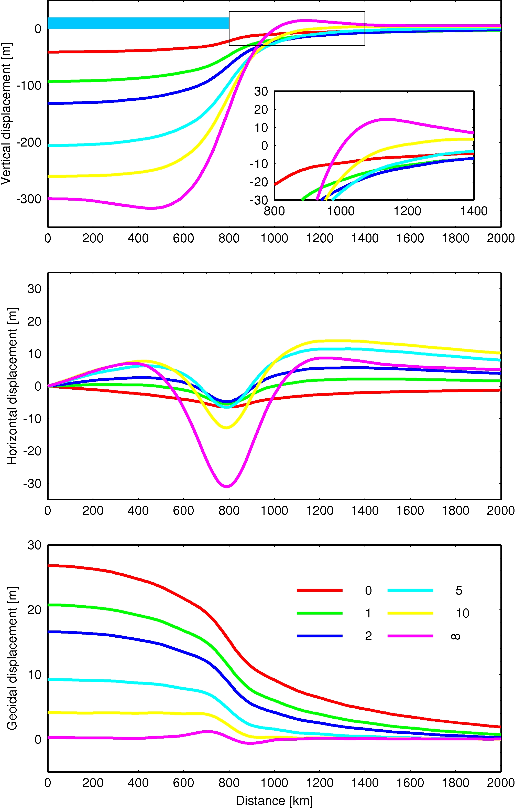

|
|
Dynamical systems in GeosciencesGeorg Kaufmann |
Master course tought at Freie Universität Berlin in the M.Sc. Geological Sciences program.
This lecture provides an introduction to dynamical systems with an emphasis to geosciences.
We will define several mathematical concepts for physical processes:
We will complement our mathematical description with examples from the Earth, e.g. Heat transport, Gravity, and Flow in crust and mantle
Georg Kaufmann
Freie Universität Berlin
Department of Geosciences, Institute of
Geological Sciences, Geophysics Section
Malteserstr. 74-100, 12249
Berlin, Haus D, Raum D127
georg.kaufmann@fu-berlin.de
The lecture series is compiled as handouts in pdf format (click on title):
|
0.
Overview
|
1.
Introduction

|
2. Flux

|
3.
Continuity

|
4. Heat
|
5.
Gravity 
|
6. Motion

|
7.
Material |
8.
Elastic 
|
|
9.
Viscous |
10.
Viscoelastic
 |
11.
Reactions |
The exercises are mainly jupyter notebooks, which
can be accessed interactively through

A list of notebooks can be found here:
git clone https://github.com/georgkaufmann/lecture_dynamics.gitWe use Git for versioning.

This project is licensed for classroom use only.